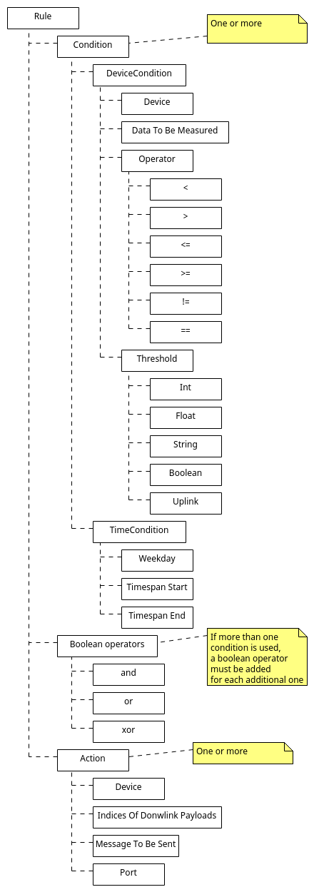
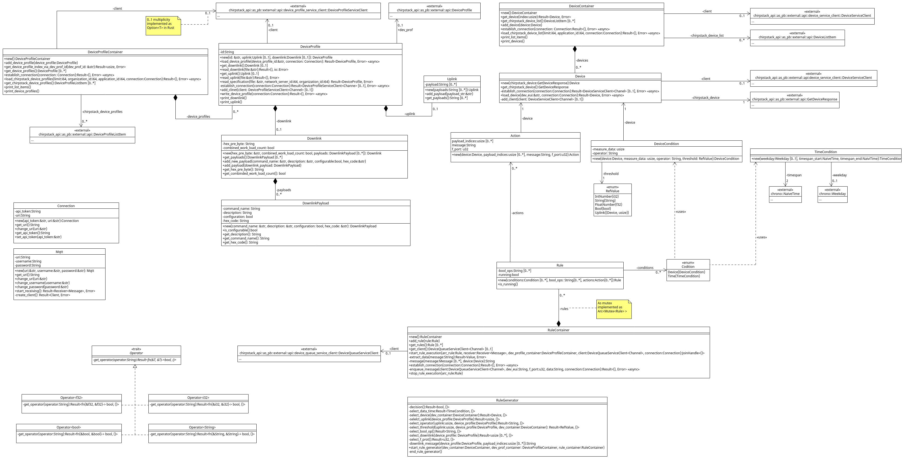

Expand description
This library provides functionality to extend the ChirpstackAPI version 3.11.1 with the ability to create device profiles with a specification file and to create and execute rules.
Its main purpose is to create specific rules for one or more devices, that leads to actions on the same or different devices, when specific conditions are fulfilled. For an overview of a rule see this paragraph.
Requirements
To use this library following requirements should be fulfilled:
- Working Chirpstack servers version 3.11.1 (chirpstack.io)
- LoRa messages have to be exchanged via Mqtt
(should already be satisfied when the servers are working; this library was tested with a mosquitto broker) - In the Mqtt configuration file, there have to exist a user that is allowed to sent messages and receive every incoming message, that contains payload data from a device.
- Uplink specification file, Downlink specification file and/or device profile specification file
(for more information about specification files see this paragraph). - To be able to load and safe devices and device profiles, and to add a message to a device queue a unique API key is required! It can be generated in the Chirpstack application server (API keys > create).
Diagrams
In this section an overview of the structure of a rule and an uml diagram of all methods is given.
Structure of a rule

UML

Specification files
Through specification files, which include either the uplink specification, the downlink specification or the whole device profile specification, it is possible to create rules that execute a specific action after an uplink message is read.
The reason for different types of specification files is that devices are often not able to
perform actions, therefore just the uplink data is necessary. Also there are devices that
don’t measure anything, but can execute actions, thus the option for downlink only.
In addition it is also possible to load device profiles and devices out of the
Chirpstack sever. In that case the profile’s specification should not be read via
the file, but directly from Chirpstack. Then just uplink or downlink specifications are read.
The specification files are necessary to get the full functionality of this library.
Examples of the different specification files
Device profile specification file
{
"device_profile":
{
"name": "XXXX",
"supports_class_b": false,
"class_b_timeout": 0,
"ping_slot_period": 0,
"ping_slot_dr": 0,
"ping_slot_freq": 0,
"supports_class_c": false,
"class_c_timeout": 0,
"mac_version": "1.0.3",
"reg_params_revision": "",
"rx_delay_1": 0,
"rx_dr_offset_1": 0,
"rx_datarate_2": 0,
"rx_freq_2": 0,
"factory_preset_freqs":[
"86800000"
],
"max_eirp": 14,
"max_duty_cycle": 0,
"supports_join": true,
"rf_region": "EU868",
"supports_32bit_f_cnt": true,
"payload_codec": "",
"payload_encoder_script": "",
"payload_decoder_script": "",
"geoloc_buffer_ttl": 0,
"geoloc_min_buffer_size": 0,
"uplink_interval": 1200,
"adr_algorithm_id": "0"
},
"uplink":
{
"payloads": [
"current",
"factor",
"power",
"power_sum",
"state",
"voltage"
]
},
"downlink":
{
"hex_pre_byte": "",
"combined_work_load_count": false,
"payloads":[
{
"command_name": "Open",
"description": "To open socket",
"configurable": false,
"hex_code": "080100ff"
},
{
"command_name": "Close",
"description": "To close socket",
"configurable": false,
"hex_code": "080000ff"
}
]
}
}
Downlink specification file
{
"hex_pre_byte": "",
"combined_work_load_count": false,
"payloads":[
{
"command_name": "Open",
"description": "To open socket",
"configurable": false,
"hex_code": "080100ff"
},
{
"command_name": "Close",
"description": "To close socket",
"configurable": false,
"hex_code": "080000ff"
}
]
}
Uplink specification file
{
"payloads": [
"co2",
"humidity",
"light",
"motion",
"temperature",
"vdd"
]
}
Modules
It is necessary to establish these connections to get the full functionality of this library.